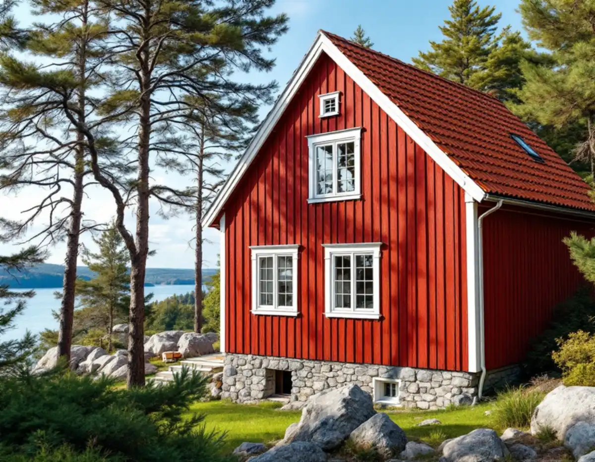
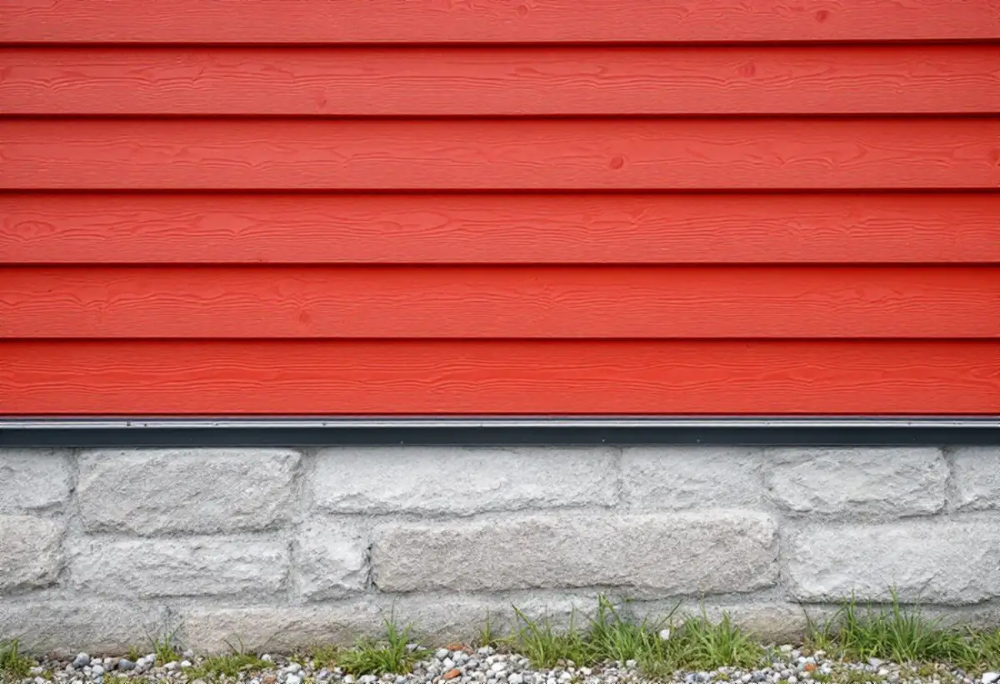

Besök
Vi går runt huset och öppnar panelen på ett ställe för att se vilka lager väggen består av.
Bakom den röda locklistpanelen på ett äldre hus i Tyresö sitter ofta en timmerstomme, och ibland ytterligare en panel från en tidigare renovering. Den som ska renovera fasaden behöver veta vad som finns i väggen innan något rivs. Geal Entreprenad AB renoverar fasader i hela Tyresö, med gratis platsbesök och skriftligt kostnadsförslag.

Boverket beskriver hur husväggar i Sverige länge bestod av liggande omålat timmer som var både stomme och fasad, och hur timmerhusen under 1800-talet fick en fasad av träpanel för att skydda stommen. Stockholms läns museums inventering av Solberga och delar av Raksta från 2008 visar hur den historien fortsätter i Tyresö: flera av de äldre husen har timmerstomme, rödfärgad locklistpanel och vita knutar, lister och foder.
Inventeringen beskriver också hur väggarna har förändrats. Om stugan vid Follbrinksströmmen skrivs att fasaderna troligen är tilläggsisolerade. Om ett annat hus står att det tilläggsisolerades under 1980-talet, och om huset som kallas Telegrafen att den äldre panelen sitter kvar under isoleringen.
En vägg i ett sådant hus kan alltså bestå av timmer, en gammal panel, isolering och en nyare panel. Varje lager påverkar hur väggen torkar ut, och det är därför vi inte river förrän vi vet vad som finns där.

Boverket varnar för att invändig isolering gör väggens utsida kallare, så att fukt som kommit in torkar långsammare och risken för röta och mögel ökar. Utvändig isolering håller i stället den befintliga väggen varmare och torrare. Men även en utvändig lösning kräver att ytterpanelen kan torka: myndigheten beskriver hur en ventilerad luftspalt bakom det yttre skiktet låter vatten som kommit förbi rinna ut igen.
När vi öppnar en vägg i ett äldre Tyresöhus kontrollerar vi därför om det finns en luftspalt bakom den yttersta panelen, om vindskyddet är helt och om den äldre panelen är torr. Är den det kan den få sitta kvar, på samma sätt som på Telegrafen. Är den angripen tas den bort, och då ser vi också över timret bakom.
Lagning går ofta före byte. Vid renoveringen av Solberga gård lagades stommen och panelen i den omfattning som behövdes, enligt museets rapport, och det är en arbetsordning vi gärna följer.
Flera av husen i inventeringen står på naturstensgrund, en del fogad med bruk och en del putsad och gråmålad. Övergången mellan grund och panel är fasadens mest utsatta del: regn som studsar från marken, snö som ligger kvar mot väggen och vatten som rinner ner bakom ett bleck.
Vi ser till att panelen slutar en bit ovanför grunden och att det finns ett droppbleck som leder vattnet ut. Har grundputsen släppt lagas den med ett bruk som passar underlaget. Dränering av husgrunden är ett eget arbete men hör ihop med fasaden, och ger enligt Skatteverket också rotavdrag.
Är det snickeriet runt fasaden som behöver förnyas, som förstukvist eller fönsterfoder, kan snickare i Tyresö ta hand om det.
Tyresö kommun skriver att det sedan 1 december 2025 inte krävs bygglov för fasadförändringar som ommålning, nytt tak eller nya fönster på en- och tvåbostadshus, men att lov krävs om fastigheten ligger inom ett kulturhistoriskt särskilt värdefullt område eller om byggnaden i sig är särskilt värdefull. Sådana områden kan vara utpekade i översiktsplan, kulturmiljöprogram eller detaljplan. Kommunen påpekar att uppdaterad information i vissa fall saknas och uppmanar fastighetsägare att höra av sig.
Museets inventering föreslog skyddsbestämmelser som omfattar flera av husens äldre stomme, fasad- och takmaterial och den röda färgsättningen. Om sådana bestämmelser har förts in i detaljplanen gäller utökad lovplikt. Vill du ha ett formellt besked kan du söka frivilligt bygglov.
Vi går runt huset och öppnar panelen på ett ställe för att se vilka lager väggen består av.
Detaljplanen kontrolleras och vid behov kontaktar vi kommunen om husets värden.
Lagning, byte, isolering och grundarbeten redovisas var för sig i ett skriftligt förslag.
Ställningen anpassas efter tomtens berg och träd.
Skadade delar lagas eller byts, luftspalt och bleck görs om och grundputsen lagas.
Vi visar vad som gjorts och vad som är bra att hålla koll på framöver.
Skatteverket ger rotavdrag i småhus för att byta och reparera fasader, tilläggsisolera, dränera husgrunder och montera byggnadsställningar i samband med rotarbetet. Avdraget gäller även ett fritidshus som du äger och använder.
Avdraget är 30 procent av arbetskostnaden, högst 50 000 kr per person och år och högst 75 000 kr tillsammans med rutavdrag. Material och resor ingår inte. Geal drar avdraget direkt på fakturan.
Hur många lager väggen har och i vilket skick de är, om timmer eller äldre panel behöver lagas, om väggen ska isoleras och hur grunden mår. Kuperade tomter med berg och träd kan också påverka ställningen. Platsbesöket är gratis och du får ett skriftligt kostnadsförslag.
Puts, panel och tilläggsisolering.
Fasadrenovering i Stockholm →Takbyte, takbesiktning och plåtarbeten.
Takläggare i Tyresö →Solberga, Raksta och Brevik.
Takrenovering i Tyresö →VA-anslutning, vattenmätare och dagvatten.
Attefallshus i Tyresö →LTA-avlopp, källarbadrum och golvbrunn.
Badrumsrenovering i Tyresö →Startbesked, utstakning och slutbesked.
Byggföretag i Tyresö →Fritidshus som blivit helårshus på Brevikshalvön.
Fasadmålning i Tyresö →Gamla bågar och beslag i Tyresö.
Fönsterbyte i Tyresö →Fritidshus som byggts om till villor.
Golvläggare i Tyresö →Slipa och spara gamla brädgolv.
Golvslipning i Tyresö →Stugor som blir helårshus.
Köksrenovering i Tyresö →Rödfärgade hus, stugor och interiörer i Tyresö.
Målare i Tyresö →Stuprör, rännor och beslag i Tyresö.
Plåtslagare i Tyresö →Stugor, altaner och tillbyggnader.
Snickare i Tyresö →Nytt tak med säker väg till skorstenen.
Takbyte i Tyresö →Ny tapet i rum med eldstad.
Tapetsering i Tyresö →Byggrätten i omvandlingsområdena.
Tillbyggnad i Tyresö →Rivningsavfallet, arkivet och eldstaden.
Totalrenovering i Tyresö →